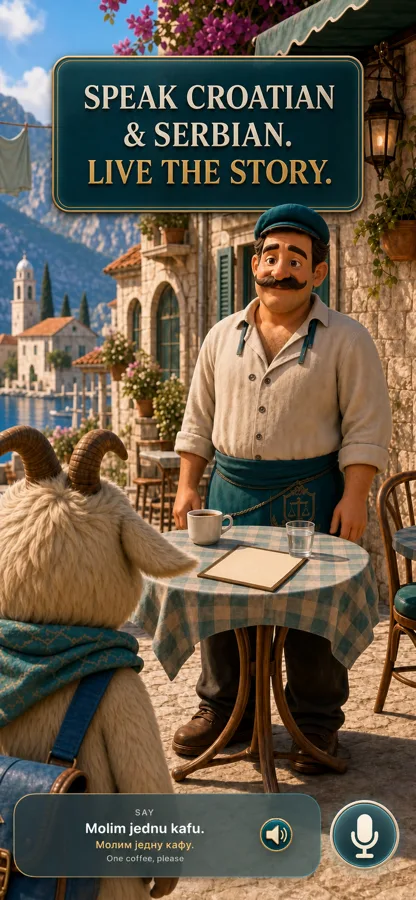
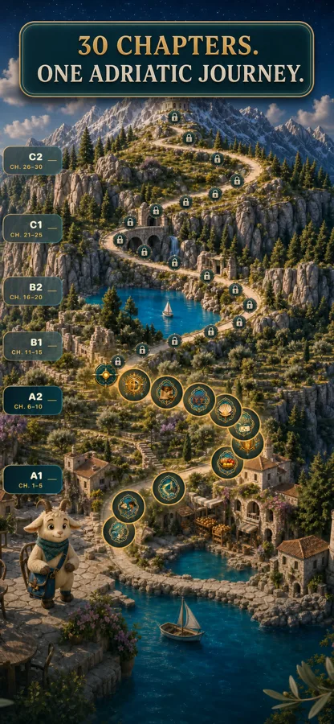
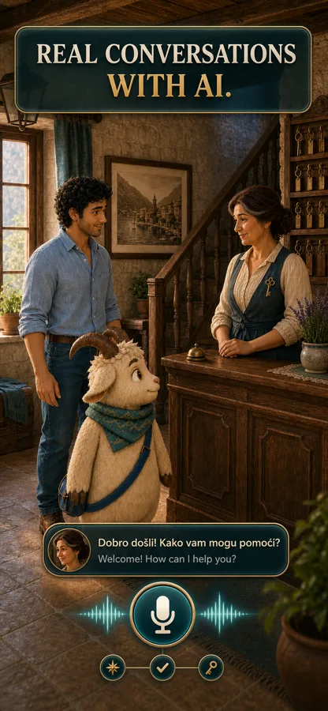
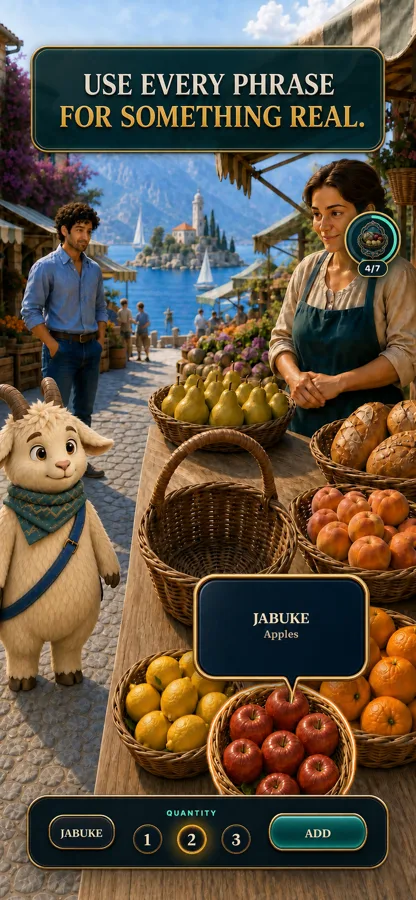
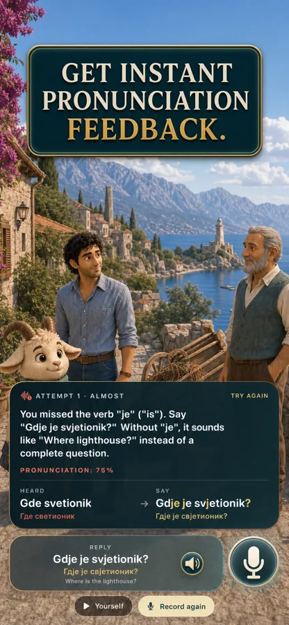
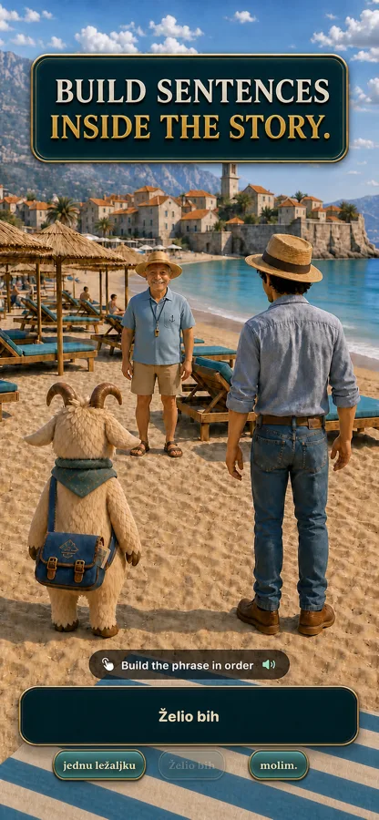
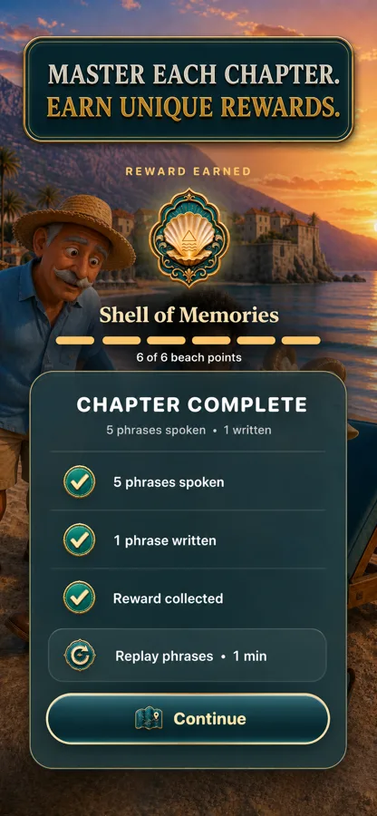
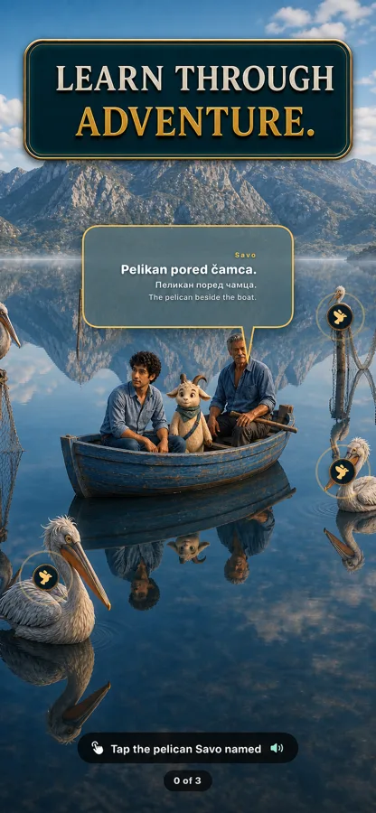
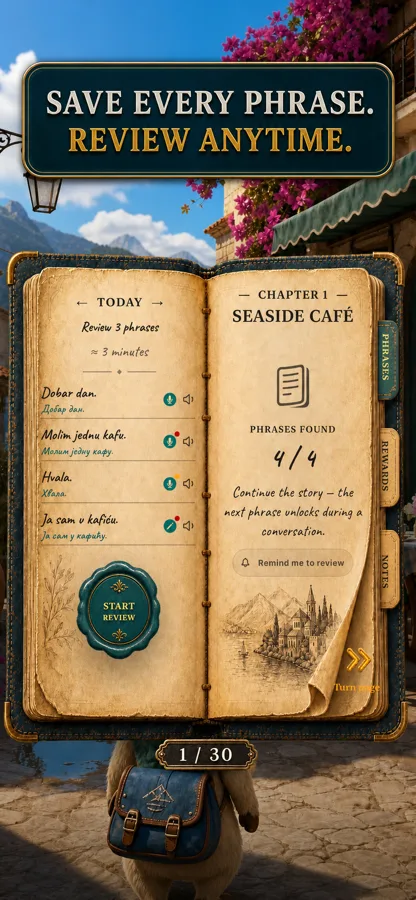

Real Conversations
Chat with a whole cast of characters — a café owner, a fisherman, a market seller. They listen, respond, and gently guide you like patient locals.
A story-driven language adventure
Journey along the Adriatic with Lumo, a curious little goat. Order coffee in a sunlit café, haggle at the morning market, and find your way to the lighthouse — speaking real Croatian and Serbian from your very first chapter.

Why Lumo works
Every phrase you learn is a key that moves the story forward. You don't memorize the language — you live it.
Chat with a whole cast of characters — a café owner, a fisherman, a market seller. They listen, respond, and gently guide you like patient locals.
Say the phrase out loud and hear how close you are — word by word. Timers adapt to real native speech, so the game is always fair, never rushed.
Assemble words into living sentences right inside the scene. Grammar sneaks in through play — you feel the language before you name the rules.
Nothing is filler. Every line you master gets used again in new scenes, so the language sticks the way real memories do.
Complete a chapter and earn a unique keepsake — a Shell of Memories, a lighthouse key. Your collection tells the story of how far you've come.
Every phrase you meet is saved automatically — with audio, Latin and Cyrillic script, and translation. Replay any of them, anytime.
How it works
Each chapter is a place on the Adriatic coast — a café, a market, a beach at sunset — with its own characters and its own little quest.
Listen, tap, build sentences, and say phrases out loud. The story only moves when you speak — and it always gives you a fair, friendly chance.
Finish the chapter, replay your phrases in one minute, and collect a unique reward. Then the road opens to the next place on the map.

The Adriatic journey
The map is your curriculum. Start in a small harbor village and climb toward the mountain tower — every chapter a real place, every level a new region of the world.
Inside the game







“The best way to learn a language isn't to study it.— The idea behind Lumo
It's to have somewhere you need to use it.”
Questions
Croatian and Serbian — together. The two languages are closely related, and Lumo shows them side by side, including both Latin and Cyrillic scripts for Serbian. You learn one Adriatic world and come away understanding both standards. Curious where to start? See our paths to learn Croatian or learn Serbian.
None at all. The journey begins at A1 with simple, essential phrases — ordering a coffee, saying hello, asking for directions. The story carries you from absolute beginner all the way toward C2 mastery.
In Lumo you never study words in a vacuum. Every phrase exists because a character needs to hear it. You speak out loud, get instant feedback, and reuse everything you learn in later chapters — the way real memory works.
Yes. Speak the phrase and Lumo evaluates it word by word, showing exactly where you nailed it and where to try again. Speaking timers are derived from real native-speaker audio, so the game never demands you speak faster than a native would.
Lumo is built for iPhone and iPad, designed natively for iOS with full support for both screen sizes.
We read everything. Write to us at support@learnwithlumo.app — feedback from early players directly shapes how chapters are tuned and improved.
Molim jednu kafu — “one coffee, please.” Learn it in your first five minutes, and let Lumo take you the rest of the way.
Get Lumo on the App Store